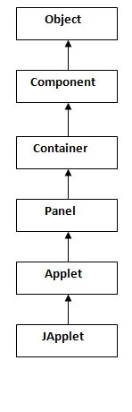

<!DOCTYPE html>
<html lang="en">

</html>
<html>

<head>
    <meta charset="UTF-8">
    <meta http-equiv="X-UA-Compatible" content="IE=edge">
    <title>Java Interview Questions | 5 | -Interview of Geeks</title>

    <!-- Css -->
    <link rel="favicon icon" href="favicon.png">
    <link rel="stylesheet" href="../style/style.css">
    <link href="https://cdn.jsdelivr.net/npm/bootstrap@5.0.0-beta2/dist/css/bootstrap.min.css" rel="stylesheet"
        integrity="sha384-BmbxuPwQa2lc/FVzBcNJ7UAyJxM6wuqIj61tLrc4wSX0szH/Ev+nYRRuWlolflfl" crossorigin="anonymous">

    <!-- Scripts -->
    <script src="https://code.jquery.com/jquery-3.2.1.slim.min.js"></script>
    <script src="https://cdn.jsdelivr.net/npm/bootstrap@5.0.0-beta2/dist/js/bootstrap.bundle.min.js"
        integrity="sha384-b5kHyXgcpbZJO/tY9Ul7kGkf1S0CWuKcCD38l8YkeH8z8QjE0GmW1gYU5S9FOnJ0"
        crossorigin="anonymous"></script>

    <!-- Meta Tags -->
    <meta name="keywords"
        content="interviewofgeeks, interview of geeks, interview preperation, interview questions, interview, java, core java,  serialization, deserialization, networking, socket, client, server, reflection, internationization, java bean, rmi, remote method invocation, core java data structure">
    <meta name="author" content="Ajay Kumar">
    <meta name="description"
        content="java, core java,  string literial, string, string buffer, StringBuffer, string builder, StringBuilder, immutable, tostring, chararray, nested class, interface, inner class, exception, garbage collection, final, finalize, finally, io, serialization, deserialization, networking, socket, client, server, reflection, internationization, java bean, rmi, remote method invocation, core java data structure">
    <meta name="viewport" content="width=device-width, initial-scale=1.0">

    <!-- Global site tag (gtag.js) - Google Analytics -->
    <script data-ad-client="ca-pub-4645356742269640" async
        src="https://pagead2.googlesyndication.com/pagead/js/adsbygoogle.js"></script>
    <script async src="https://www.googletagmanager.com/gtag/js?id=G-ZX3ZK4E5HC"></script>
    <script>
        window.dataLayer = window.dataLayer || [];
        function gtag() { dataLayer.push(arguments); }
        gtag('js', new Date());

        gtag('config', 'G-ZX3ZK4E5HC');
    </script>

    <style>
        body {
            font-family: 'Open Sans', sans-serif;
            background-color: rgb(250, 250, 250);
            overflow-x: hidden;
        }
    </style>


</head>
<!-- Header -->

<body>

    <div class="">
        <nav class="navbar bg-white" id="siteloog">
            <a href="../index.html"><span class="navbar-brand mb-0 h1"></span></a>
        </nav>
        <!-- Header Menu -->
        <nav class="navbar navbar-expand-lg navbar-light bg-white">
            <button class="navbar-toggler" type="button" data-toggle="collapse" data-target="#navbarNav"
                aria-controls="navbarNav" aria-expanded="false" aria-label="Toggle navigation">
                <span class="navbar-toggler-icon"></span>
            </button>
            <div class="collapse navbar-collapse" id="navbarNav">
                <ul class="navbar-nav">
                    <li class="nav-item ">
                        <a class="nav-link" href="../index.html">Home</a>
                    </li>
                    <li class="nav-item">
                        <a class="nav-link" href="data-structure.html">Data Structure</a>
                    </li>
                    <li class="nav-item">
                        <a class="nav-link" href="algorithm.html">Algorithm</a>
                    </li>
                    <li class="nav-item">
                        <a class="nav-link" href="company-interview.html">Company Interview</a>
                    </li>
                    <li class="nav-item">
                        <a class="nav-link" href="technical-interview.html">Technical Interview</a>
                    </li>
                    <li class="nav-item">
                        <a class="nav-link" href="web-interview.html">Web Interview</a>
                    </li>
                    <li class="nav-item">
                        <a class="nav-link active" href="java-interview.html">Java Interview</a>
                    </li>
                    <li class="nav-item">
                        <a class="nav-link" href="database-interview.html">Data Base Interview</a>
                    </li>
                    <li class="nav-item">
                        <a class="nav-link" href="python-interview.html">Python Interview</a>
                    </li>
                </ul>
            </div>
        </nav>

        <!-- Main div -->
        <div class="container  ">
            <div class="row" style="margin-top: 25px;">
                <div class="col-md-8 bg-white shadow-sm">
                    <span>
                        <h4 class="hm-welcome">Core java Interview Questions Interview Questions | 5</h4>
                    </span><span>201-250 out of 300 Questions</span>

                    <hr class="divider">
                    <p class="read-para">There is the list of 300 core Java interview questions. If there is any
                        core Java interview
                        question that has been asked to you, kindly post it in the ask question section. We assure
                        that you will get here the 90% frequently asked interview questions and answers. <br><br> The
                        answers to the Core Java interview questions are short and to the point. The core Java
                        interview questions are categorized in Basics of Java interview questions, OOPs interview
                        questions, String Handling interview questions, Multithreading interview questions,
                        collection interview questions, JDBC interview questions, etc.</p>
                    <br>
                    <div>
                        <nav aria-label="...">
                            <ul class="pagination justify-content-center">
                                <li class="page-item">
                                    <a class="page-link" href="java-interview.html">1</a>
                                </li>
                                <li class="page-item  ">
                                    <a class="page-link" href="java-interview-2.html">2</a>
                                </li>
                                <li class="page-item">
                                    <a class="page-link" href="java-interview-3.html">3</a>
                                </li>
                                <li class="page-item">
                                    <a class="page-link" href="java-interview-4.html">4</a>
                                </li>
                                <li class="page-item active">
                                    <a class="page-link" href="java-interview-5.html">5<span
                                            class="sr-only">(current)</span></a>
                                </li>
                                <li class="page-item">
                                    <a class="page-link" href="java-interview-6.html">6</a>
                                </li>
                            </ul>
                        </nav>
                    </div>

                    <div>
                        <ol class="qa-list" id="javabasicquestions">
                            <li>
                                <h5 class="question">201. How can you avoid serialization in child class if the base
                                    class is implementing the Serializable interface?</h5>
                                <p class="read-para">It is very tricky to prevent serialization of child class if the
                                    base class is intended to implement the Serializable interface. However, we cannot
                                    do it directly, but the serialization can be avoided by implementing the
                                    writeObject() or readObject() methods in the subclass and throw
                                    NotSerializableException from these methods. Consider the following example.</p>
                                <code>
                                    import java.io.FileInputStream;  <br> 
import java.io.FileOutputStream;   <br>
import java.io.IOException;   <br>
import java.io.NotSerializableException;  <br> 
import java.io.ObjectInputStream;   <br>
import java.io.ObjectOutputStream;  <br> 
import java.io.Serializable;   <br>
class Person implements Serializable <br>  
{   <br>
    String name = " ";  <br>
    public Person(String name)  <br>  
    {   <br>
        this.name = name;   <br>
    }         <br>
}   <br>
class Employee extends Person  <br>
{   <br>
    float salary;  <br>
    public Employee(String name, float salary)   <br> 
    {   <br>
        super(name);   <br>
        this.salary = salary;   <br>
    }   <br>
    private void writeObject(ObjectOutputStream out) throws IOException  <br> 
    {   <br>
        throw new NotSerializableException();   <br>
    }   <br>
    private void readObject(ObjectInputStream in) throws IOException   <br>
    {   <br>
        throw new NotSerializableException();   <br>
    }   <br>
        
}   <br>
public class Test   <br>
{   <br>
    public static void main(String[] args)   <br> 
            throws Exception    <br>
    {   <br>
        Employee emp = new Employee("Sharma", 10000);   <br>
            <br>
        System.out.println("name = " + emp.name); <br>  
        System.out.println("salary = " + emp.salary);  <br> 
            
        FileOutputStream fos = new FileOutputStream("abc.ser");  <br> 
        ObjectOutputStream oos = new ObjectOutputStream(fos); <br>  
                <br>
        oos.writeObject(emp);   <br>
                <br>
        oos.close();   <br>
        fos.close();   <br>
                
        System.out.println("Object has been serialized");  <br> 
            <br>
        FileInputStream f = new FileInputStream("ab.txt");   <br>
        ObjectInputStream o = new ObjectInputStream(f);   <br>
                <br>
        Employee emp1 = (Employee)o.readObject();   <br>
                <br>
        o.close();   <br>
        f.close();   <br>
                <br>
        System.out.println("Object has been deserialized");   <br>
            <br>
        System.out.println("name = " + emp1.name);   <br>
        System.out.println("salary = " + emp1.salary);   <br>
    }   <br>
}   
                                </code>
                                <hr>
                            </li>

                            <li>
                                <h5 class="question">202. Can a Serialized object be transferred via network?</h5>
                                <p class="read-para">Yes, we can transfer a serialized object via network because the
                                    serialized object is stored in the memory in the form of bytes and can be
                                    transmitted over the network. We can also write the serialized object to the disk or
                                    the database.</p>
                                <hr>
                            </li>

                            <li>
                                <h5 class="question">203. What is Deserialization?</h5>
                                <p class="read-para">Deserialization is the process of reconstructing the object from
                                    the serialized state. It is the reverse operation of serialization. An
                                    ObjectInputStream deserializes objects and primitive data written using an
                                    ObjectOutputStream.</p>

                                <code>
                                        import java.io.*;  <br>
class Depersist{  <br>
 public static void main(String args[])throws Exception{  <br>
    <br>
  ObjectInputStream in=new ObjectInputStream(new FileInputStream("f.txt"));  <br>
  Student s=(Student)in.readObject();  <br>
  System.out.println(s.id+" "+s.name);  <br>
  <br>
  in.close();  <br>
 }  <br>
}  
                                    </code>
                                <p class="read-para" style="font-style: italic;">Output</p>
                                <code>
                                        211 ravi
                                    </code>
                                <hr>
                            </li>

                            <li>
                                <h5 class="question">204. What is the transient keyword?</h5>
                                <p class="read-para">If you define any data member as transient, it will not be
                                    serialized. By determining transient keyword, the value of variable need not persist
                                    when it is restored.
                                </p>
                                <hr>
                            </li>

                            <li>
                                <h5 class="question">205. What is Externalizable?</h5>
                                <p class="read-para">The Externalizable interface is used to write the state of an
                                    object into a byte stream in a compressed format. It is not a marker interface.</p>
                                <hr>
                            </li>

                            <li>
                                <h5 class="question">206. What is the difference between Serializable and Externalizable
                                    interface?</h5>

                                <table class="table">
                                    <thead class="thead-dark read-para">
                                        <tr>
                                            <th scope="col" style="width: 50%;">Serializable</th>
                                            <th scope="col" style="width: 50%;">Externalizable
                                            </th>
                                        </tr>
                                    </thead>
                                    <tbody class="read-para">
                                        <tr>
                                            <td>1) The Serializable interface does not have any method, i.e., it is a
                                                marker interface.</td>
                                            <td>The Externalizable interface contains is not a marker interface, It
                                                contains two methods, i.e., writeExternal() and readExternal().</td>
                                        </tr>
                                        <tr>
                                            <td>2) It is used to "mark" Java classes so that objects of these classes
                                                may get the certain capability.</td>
                                            <td>The Externalizable interface provides control of the serialization logic
                                                to the programmer.</td>
                                        </tr>
                                        <tr>
                                            <td>3) It is easy to implement but has the higher performance cost.</td>
                                            <td>It is used to perform the serialization and often result in better
                                                performance.</td>
                                        </tr>
                                        <tr>
                                            <td>4) No class constructor is called in serialization.</td>
                                            <td>We must call a public default constructor while using this interface.
                                            </td>
                                        </tr>
                                    </tbody>
                                </table>
                                <hr>
                            </li>

                            <div style="width: 100%; height: 40px; background-color: green;"
                                id="javainheritancequestions">
                                <h5 style="color: white; margin: auto; padding: auto; text-align: center;">
                                    Networking Interview Questions
                                </h5>
                            </div><br>

                            <li>
                                <h5 class="question">207. Give a brief description of Java socket programming?</h5>
                                <p class="read-para">Java Socket programming is used for communication between the
                                    applications running on different JRE. Java Socket programming can be
                                    connection-oriented or connectionless. Socket and ServerSocket classes are used for
                                    connection-oriented socket programming and DatagramSocket, and DatagramPacket
                                    classes are used for connectionless socket programming. The client in socket
                                    programming must know two information:</p>

                                <ul>
                                    <li>IP address of the server</li>
                                    <li>port number</li>
                                </ul>
                                <hr>
                            </li>

                            <li>
                                <h5 class="question">208. What is Socket?
                                </h5>
                                <p class="read-para">A socket is simply an endpoint for communications between the
                                    machines. It provides the connection mechanism to connect the two computers using
                                    TCP. The Socket class can be used to create a socket.</p>
                                <hr>
                            </li>

                            <li>
                                <h5 class="question">209. What are the steps that are followed when two computers
                                    connect through TCP?</h5>
                                <p class="read-para">There are the following steps that are performed when two computers
                                    connect through TCP.</p>
                                <ul class="read-para">
                                    <li>The ServerSocket object is instantiated by the server which denotes the port
                                        number to which, the connection will be made.</li>
                                    <li>After instantiating the ServerSocket object, the server invokes accept() method
                                        of ServerSocket class which makes server wait until the client attempts to
                                        connect to the server on the given port.</li>
                                    <li>Meanwhile, the server is waiting, a socket is created by the client by
                                        instantiating Socket class. The socket class constructor accepts the server port
                                        number and server name.</li>
                                    <li>The Socket class constructor attempts to connect with the server on the
                                        specified name. If the connection is established, the client will have a socket
                                        object that can communicate with the server.</li>
                                    <li>The accept() method invoked by the server returns a reference to the new socket
                                        on the server that is connected with the server.</li>
                                </ul>
                                <hr>
                            </li>

                            <li>
                                <h5 class="question">210. Write a program in Java to establish a connection between
                                    client and server?</h5>
                                <p class="read-para">Consider the following program where the connection between the
                                    client and server is established.</p>
                                <p>File: MyServer.java</p>
                                <code>
                                    import java.io.*;  <br>
                                    import java.net.*;  <br>
                                    public class MyServer { <br> 
                                    public static void main(String[] args){  <br>
                                    try{  <br>
                                    ServerSocket ss=new ServerSocket(6666); <br> 
                                    Socket s=ss.accept();//establishes connection   <br>
                                    DataInputStream dis=new DataInputStream(s.getInputStream());  <br>
                                    String  str=(String)dis.readUTF();  <br>
                                    System.out.println("message= "+str);  <br>
                                    ss.close();  <br>
                                    }catch(Exception e){System.out.println(e);}  <br>
                                    }  <br>
                                    } 
                                </code> <br>

                                <p>File: Myclient.java</p>
                                <code>
                                    import java.io.*;  <br>
import java.net.*;  <br>
public class MyClient {  <br>
public static void main(String[] args) {  <br>
try{    <br>
Socket s=new Socket("localhost",6666); <br> 
DataOutputStream dout=new DataOutputStream(s.getOutputStream());  <br>
dout.writeUTF("Hello Server");  <br>
dout.flush();  <br>
dout.close();  <br>
s.close();  <br>
}catch(Exception e){System.out.println(e);}  <br>
}  <br>
}
                                </code>
                                <hr>
                            </li>

                            <li>
                                <h5 class="question">211. How do I convert a numeric IP address like 192.18.97.39 into a
                                    hostname like java.sun.com?</h5>
                                <p class="read-para">By InetAddress.getByName("192.18.97.39").getHostName() where
                                    192.18.97.39 is the IP address. Consider the following example</p>
                                <code>
                                    import java.io.*;    <br>
import java.net.*;    <br>
public class InetDemo{    <br>
public static void main(String[] args){ <br>   
try{    <br>
InetAddress ip=InetAddress.getByName("195.201.10.8");    <br>
  <br>
System.out.println("Host Name: "+ip.getHostName());    <br>
}catch(Exception e){System.out.println(e);}    <br>
}    <br>
}
                                </code>
                                <hr>
                            </li>

                            <div style="width: 100%; height: 40px; background-color: green;"
                                id="javainheritancequestions">
                                <h5 style="color: white; margin: auto; padding: auto; text-align: center;">
                                    Reflection Interview Questions
                                </h5>
                            </div><br>

                            <li>
                                <h5 class="question">212. What is the reflection?</h5>
                                <p class="read-para">Reflection is the process of examining or modifying the runtime
                                    behavior of a class at runtime. The java.lang.Class class provides various methods
                                    that can be used to get metadata, examine and change the runtime behavior of a
                                    class. The java.lang and java.lang.reflect packages provide classes for java
                                    reflection. It is used in:</p>
                                <ul class="read-para">
                                    <li>IDE (Integrated Development Environment), e.g., Eclipse, MyEclipse, NetBeans.
                                    </li>
                                    <li>Debugger</li>
                                    <li>Test Tools, etc.</li>
                                </ul>
                                <hr>
                            </li>

                            <li>
                                <h5 class="question">213. What is the purpose of using java.lang.Class class?</h5>
                                <p class="read-para">
                                    The java.lang.Class class performs mainly two tasks:
                                </p>
                                <ul class="read-para">
                                    <li>Provides methods to get the metadata of a class at runtime.</li>
                                    <li>Provides methods to examine and change the runtime behavior of a class.</li>
                                </ul>
                                <hr>
                            </li>

                            <li>
                                <h5 class="question">214. What are the ways to instantiate the Class class?</h5>
                                <p class="read-para">There are three ways to instantiate the Class class.</p>
                                <ul class="read-para">
                                    <li class="read-para"><span>forName() method of Class class:</span> The forName()
                                        method is used to load the class dynamically. It returns the instance of Class
                                        class. It should be used if you know the fully qualified name of the class. This
                                        cannot be used for primitive types.</li>
                                    <li class="read-para"><span>getClass() method of Object class:</span> It returns the
                                        instance of Class class. It should be used if you know the type. Moreover, it
                                        can be used with primitives.</li>
                                    <li class="read-para"><span>the .class syntax: </span>aIf a type is available, but
                                        there is no instance then it is possible to obtain a Class by appending ".class"
                                        to the name of the type. It can be used for primitive data type also.</li>
                                </ul>
                                <hr>
                            </li>

                            <li>
                                <h5 class="question">215. What is the output of the following Java program?</h5>
                                <code>
                                    class Simple{    <br>
                                        public Simple()  <br>
                                        {  <br>
                                          System.out.println("Constructor of Simple class is invoked");  <br>
                                        }  <br>
                                        void message(){System.out.println("Hello Java");}    <br>
                                       }    <br>
                                           <br>
                                       class Test1{    <br>
                                        public static void main(String args[]){    <br>
                                         try{    <br>
                                         Class c=Class.forName("Simple");    <br>
                                         Simple s=(Simple)c.newInstance();    <br>
                                         s.message();    <br>
                                         }catch(Exception e){System.out.println(e);}    <br>
                                        }    <br>
                                       }   
                                </code>
                                <p class="read-para" style="font-style:italic;">Output</p>
                                <code>
                                    Constructor of Simple class is invoked <br>
Hello Java
                                </code>
                                <hr>
                            </li>

                            <li>
                                <h5 class="question">216. What is the purpose of using javap?</h5>
                                <p class="read-para">The javap command disassembles a class file. The javap command
                                    displays information about the fields, constructors and methods present in a class
                                    file.</p>
                                <hr>
                            </li>

                            <li>
                                <h5 class="question">217. Can you access the private method from outside the class?</h5>
                                <p class="read-para">Yes, by changing the runtime behavior of a class if the class is
                                    not secured.</p>
                                <hr>
                            </li>

                            <div style="width: 100%; height: 40px; background-color: green;"
                                id="javainheritancequestions">
                                <h5 style="color: white; margin: auto; padding: auto; text-align: center;">
                                    Miscellaneous Interview Questions
                                </h5>
                            </div><br>

                            <li>
                                <h5 class="question">218. What are wrapper classes?</h5>
                                <p class="read-para">Wrapper classes are classes that allow primitive types to be
                                    accessed as objects. In other words, we can say that wrapper classes are built-in
                                    java classes which allow the conversion of objects to primitives and primitives to
                                    objects. The process of converting primitives to objects is called autoboxing, and
                                    the process of converting objects to primitives is called unboxing. There are eight
                                    wrapper classes present in java.lang package is given below.</p>

                                <table class="table">
                                    <thead class="thead-dark read-para">
                                        <tr>
                                            <th scope="col" style="width: 50%;">Primitive Type</th>
                                            <th scope="col" style="width: 50%;">Wrapper class</th>
                                        </tr>
                                    </thead>
                                    <tbody class="read-para">
                                        <tr>
                                            <td>boolean</td>
                                            <td>Boolean</td>
                                        </tr>
                                        <tr>
                                            <td>char</td>
                                            <td>Character</td>
                                        </tr>
                                        <tr>
                                            <td>byte</td>
                                            <td>Byte</td>
                                        </tr>
                                        <tr>
                                            <td>short</td>
                                            <td>Short</td>
                                        </tr>
                                        <tr>
                                            <td>int</td>
                                            <td>Integer</td>
                                        </tr>
                                        <tr>
                                            <td>long</td>
                                            <td>Long</td>
                                        </tr>
                                        <tr>
                                            <td>float</td>
                                            <td>Float</td>
                                        </tr>
                                        <tr>
                                            <td>double</td>
                                            <td>Double</td>
                                        </tr>
                                    </tbody>
                                </table>

                                <hr>
                            </li>

                            <li>
                                <h5 class="question">219. What are autoboxing and unboxing? When does it occur?</h5>
                                <p class="read-para">The autoboxing is the process of converting primitive data type to
                                    the corresponding wrapper class object, eg., int to Integer. The unboxing is the
                                    process of converting wrapper class object to primitive data type. For eg., integer
                                    to int. Unboxing and autoboxing occur automatically in Java. However, we can
                                    externally convert one into another by using the methods like valueOf() or
                                    xxxValue(). <br><br>

                                    It can occur whenever a wrapper class object is expected, and primitive data type is
                                    provided or vice versa.</p>
                                <ul class="read-para">
                                    <li>Adding primitive types into Collection like ArrayList in Java.</li>
                                    <li>Creating an instance of parameterized classes ,e.g., ThreadLocal which expect
                                        Type.</li>
                                    <li>Java automatically converts primitive to object whenever one is required and
                                        another is provided in the method calling.</li>
                                    <li>When a primitive type is assigned to an object type.</li>
                                </ul>
                                <hr>
                            </li>

                            <li>
                                <h5 class="question">220. What is the output of the below Java program?</h5>
                                <code>
                                    public class Test1 <br> 
{  <br>
  public static void main(String[] args) {  <br>
  Integer i = new Integer(201);  <br>
  Integer j = new Integer(201);  <br>
  if(i == j)  <br>
  {  <br>
    System.out.println("hello");  <br>
  }  <br>
  else   <br>
  {  <br>
    System.out.println("bye"); <br> 
  }  <br>
  }  <br>
}
                                </code>
                                <p class="read-para" style="font-style:italic;">Output</p>
                                <code>
                                    bye
                                </code>
                                <hr>
                            </li>

                            <li>
                                <h5 class="question">221. What is object cloning?</h5>
                                <p class="read-para">The object cloning is a way to create an exact copy of an object.
                                    The clone() method of the Object class is used to clone an object. The
                                    java.lang.Cloneable interface must be implemented by the class whose object clone we
                                    want to create. If we don't implement Cloneable interface, clone() method generates
                                    CloneNotSupportedException. The clone() method is defined in the Object class. The
                                    syntax of the clone() method is as follows: <br><br> <span>protected Object clone()
                                        throws CloneNotSupportedException</span>
                                </p>

                                <hr>
                            </li>

                            <li>
                                <h5 class="question">222. What are the advantages and disadvantages of object cloning?
                                </h5>
                                <p class="read-para"><span>Advantage of Object Cloning</span></p>
                                <ul class="read-para">
                                    <li>You don't need to write lengthy and repetitive codes. Just use an abstract class
                                        with a 4- or 5-line long clone() method.</li>
                                    <li>It is the easiest and most efficient way of copying objects, especially if we
                                        are applying it to an already developed or an old project. Just define a parent
                                        class, implement Cloneable in it, provide the definition of the clone() method
                                        and the task will be done.</li>
                                    <li>Clone() is the fastest way to copy the array.</li>
                                </ul>
                                <p class="read-para"><span>Disadvantage of Object Cloning</span></p>
                                <ul class="read-para">
                                    <li>To use the Object.clone() method, we have to change many syntaxes to our code,
                                        like implementing a Cloneable interface, defining the clone() method and
                                        handling CloneNotSupportedException, and finally, calling Object.clone(), etc.
                                    </li>
                                    <li>We have to implement the Cloneable interface while it does not have any methods
                                        in it. We have to use it to tell the JVM that we can perform a clone() on our
                                        object.</li>
                                    <li>Object.clone() is protected, so we have to provide our own clone() and
                                        indirectly call Object.clone() from it.</li>
                                    <li>Object.clone() does not invoke any constructor, so we do not have any control
                                        over object construction.</li>
                                    <li>If you want to write a clone method in a child class, then all of its
                                        superclasses should define the clone() method in them or inherit it from another
                                        parent class. Otherwise, the super.clone() chain will fail.</li>
                                    <li>Object.clone() supports only shallow copying, but we will need to override it if
                                        we need deep cloning.</li>
                                </ul>
                                <hr>
                            </li>

                            <li>
                                <h5 class="question">223. What is a native method?</h5>
                                <p class="read-para">A native method is a method that is implemented in a language other
                                    than Java. Natives methods are sometimes also referred to as foreign methods.</p>
                                <hr>
                            </li>
                            <li>
                                <h5 class="question">224. What is the purpose of the strictfp keyword?</h5>
                                <p class="read-para">Java strictfp keyword ensures that you will get the same result on
                                    every platform if you perform operations in the floating-point variable. The
                                    precision may differ from platform to platform that is why java programming language
                                    has provided the strictfp keyword so that you get the same result on every platform.
                                    So, now you have better control over the floating-point arithmetic.</p>
                                <hr>
                            </li>

                            <li>
                                <h5 class="question">225. What is the purpose of the System class?</h5>
                                <p class="read-para">The purpose of the System class is to provide access to system
                                    resources such as standard input and output. It cannot be instantiated. Facilities
                                    provided by System class are given below.</p>
                                <ul class="read-para">
                                    <li>Standard input</li>
                                    <li>Error output streams</li>
                                    <li>Standard output</li>
                                    <li>utility method to copy the portion of an array</li>
                                    <li>utilities to load files and libraries</li>
                                </ul>
                                <p class="read-para">There are the three fields of Java System class, i.e., static
                                    printstream err, static inputstream in, and standard output stream.</p>
                                <hr>
                            </li>

                            <li>
                                <h5 class="question">226. What comes to mind when someone mentions a shallow copy in
                                    Java?</h5>
                                <p class="read-para">Object cloning.</p>
                                <hr>
                            </li>

                            <li>
                                <h5 class="question">227. What is a singleton class?</h5>
                                <p class="read-para">Singleton class is the class which can not be instantiated more
                                    than once. To make a class singleton, we either make its constructor private or use
                                    the static getInstance method. Consider the following example.</p>
                                <code>
                                        class Singleton{  <br>
                                            private static Singleton single_instance = null;  <br>
                                            int i;  <br>
                                             private Singleton ()  <br>
                                             {  <br>
                                                 i=90;  <br>
                                             }  <br>
                                             public static Singleton getInstance()  <br>
                                             {  <br>
                                                 if(single_instance == null)  <br>
                                                 {  <br>
                                                     single_instance = new Singleton();  <br>
                                                 }  <br>
                                                 return single_instance;  <br>
                                             }  <br>
                                        }  <br>
                                        public class Main   <br>
                                        {  <br>
                                            public static void main (String args[])  <br>
                                            {  <br>
                                                Singleton first = Singleton.getInstance();  <br>
                                                System.out.println("First instance integer value:"+first.i);  <br>
                                                first.i=first.i+90;  <br>
                                                Singleton second = Singleton.getInstance();  <br>
                                                System.out.println("Second instance integer value:"+second.i); <br> 
                                            }  <br>
                                        }
                                    </code>
                                <hr>
                            </li>


                            <li>
                                <h5 class="question">228. Write a Java program that prints all the values given at
                                    command-line.</h5>
                                <p>Program</p>
                                <code>
                                    class A{  <br>
                                        public static void main(String args[]){  <br>
                                          <br>
                                        for(int i=0;i&#60;args.length;i++)  <br>
                                        System.out.println(args[i]);  <br>
                                          <br>
                                        }  <br>
                                        } 
                                </code>
                                <p>Compile:</p>
                                <code>
                                    compile by > javac A.java  <br>
                                    run by > java A Stephan 1 3 abc 
                                </code>
                                <p class="read-para" style="font-style: italic;">Output</p>
                                <code>
                                    Stephan <br>1 <br>3 <br>abc
                                </code>

                                <hr>
                            </li>

                            <li>
                                <h5 class="question">229. Which containers use a border layout as their default layout?
                                </h5>
                                <p class="read-para">The Window, Frame and Dialog classes use a border layout as their
                                    default layout.</p>
                                <hr>
                            </li>

                            <li>
                                <h5 class="question">230. Which containers use a FlowLayout as their default layout?
                                </h5>
                                <p class="read-para">The Panel and Applet classes use the FlowLayout as their default
                                    layout.</p>
                                <hr>
                            </li>

                            <li>
                                <h5 class="question">231. What are peerless components?</h5>
                                <p class="read-para">The lightweight component of Swing is called peerless components.
                                    Spring has its libraries, so it does not use resources from the Operating System,
                                    and hence it has lightweight components.

                                </p>
                                <hr>
                            </li>

                            <li>
                                <h5 class="question">232. is there is any difference between a Scrollbar and a
                                    ScrollPane?</h5>
                                <p class="read-para">The Scrollbar is a Component whereas the ScrollPane is a Container.
                                    A ScrollPane handles its events and performs its scrolling.</p>
                                <hr>
                            </li>

                            <li>
                                <h5 class="question">233. What is a lightweight component?</h5>
                                <p class="read-para">Lightweight components are the one which does not go with the
                                    native call to obtain the graphical units. They share their parent component
                                    graphical units to render them. For example, Swing components, and JavaFX
                                    Components.
                                </p>
                                <hr>
                            </li>

                            <li>
                                <h5 class="question">234. What is a heavyweight component?</h5>
                                <p class="read-para">The portable elements provided by the operating system are called
                                    heavyweight components. AWT is limited to the graphical classes provided by the
                                    operating system and therefore, It implements only the minimal subset of screen
                                    elements supported by all platforms. The Operating system dependent UI discovery
                                    tools are called heavyweight components.</p>
                                <hr>
                            </li>

                            <li>
                                <h5 class="question">235.What is an applet?</h5>
                                <p class="read-para">An applet is a small java program that runs inside the browser and
                                    generates dynamic content. It is embedded in the webpage and runs on the client
                                    side. It is secured and takes less response time. It can be executed by browsers
                                    running under many platforms, including Linux, Windows, Mac Os, etc. However, the
                                    plugins are required at the client browser to execute the applet. The following
                                    image shows the architecture of Applet</p>

                                
                                <p class="read-para">When an applet is created, the following methods are invoked in
                                    order.</p>
                                <ul class="read-para">
                                    <li>init()</li>
                                    <li>start()</li>
                                    <li>paint()</li>
                                </ul>
                                <p class="read-para">When an applet is destroyed, the following functions are invoked in
                                    order.</p>
                                <ul class="read-para">
                                    <li>stop()</li>
                                    <li>destroy()</li>
                                </ul>
                                <hr>
                            </li>

                            <li>
                                <h5 class="question">236. Can you write a Java class that could be used both as an
                                    applet as well as an application?</h5>
                                <p class="read-para">Yes. Add a main() method to the applet.</p>
                                <hr>
                            </li>

                            <div style="width: 100%; height: 40px; background-color: green;"
                                id="javainheritancequestions">
                                <h5 style="color: white; margin: auto; padding: auto; text-align: center;">
                                    Internationalization Interview Questions
                                </h5>
                            </div><br>

                            <li>
                                <h5 class="question">237. What is Locale?</h5>

                                <p class="read-para">A Locale object represents a specific geographical, political, or
                                    cultural region. This object can be used to get the locale-specific information such
                                    as country name, language, variant, etc.</p>
                                <code>
                                        import java.util.*;  <br>
public class LocaleExample {  <br>
public static void main(String[] args) {  <br>
Locale locale=Locale.getDefault();  <br>
//Locale locale=new Locale("fr","fr");//for the specific locale  <br>
  <br>
System.out.println(locale.getDisplayCountry());  <br>
System.out.println(locale.getDisplayLanguage());  <br>
System.out.println(locale.getDisplayName());  <br>
System.out.println(locale.getISO3Country());  <br>
System.out.println(locale.getISO3Language()); <br> 
System.out.println(locale.getLanguage());  <br>
System.out.println(locale.getCountry()); <br> 
      <br>
}  <br>
}  
                                    </code>
                                <p class="read-para" style="font-style: italic;">Output</p>
                                <code>
                                        United States  <br>
English <br>
English (United States) <br>
USA <br>
eng <br>
en <br>
US
                                    </code>
                                <hr>
                            </li>

                            <li>
                                <h5 class="question">238. How will you load a specific locale?</h5>
                                <p class="read-para">By ResourceBundle.getBundle(?) method.</p>
                                <hr>
                            </li>

                            <div style="width: 100%; height: 40px; background-color: green;"
                                id="javainheritancequestions">
                                <h5 style="color: white; margin: auto; padding: auto; text-align: center;">
                                    Java Bean Interview Questions
                                </h5>
                            </div><br>


                            <li>
                                <h5 class="question">239. What is a JavaBean?</h5>
                                <br>
                                <p class="read-para">JavaBean is a reusable software component written in the Java
                                    programming language, designed to be manipulated visually by a software development
                                    environment, like JBuilder or VisualAge for Java. t. A JavaBean encapsulates many
                                    objects into one object so that we can access this object from multiple places.
                                    Moreover, it provides the easy maintenance. Consider the following example to create
                                    a JavaBean class.</p>
                                <code>
                                    //Employee.java  <br>
package mypack;  <br>
public class Employee implements java.io.Serializable{  <br>
private int id;  <br>
private String name;  <br>
public Employee(){}  <br>
public void setId(int id){this.id=id;}  <br>
public int getId(){return id;}  <br>
public void setName(String name){this.name=name;}  <br>
public String getName(){return name;}  <br>
}
                                </code>
                                <hr>
                            </li>

                            <li>
                                <h5 class="question">240. What is the purpose of using the Java bean?</h5>
                                <p class="read-para">According to Java white paper, it is a reusable software component.
                                    A bean encapsulates many objects into one object so that we can access this object
                                    from multiple places. Moreover, it provides the easy maintenance.</p>
                                <hr>
                            </li>


                            <li>
                                <h5 class="question">241. What do you understand by the bean persistent property?</h5>
                                <p class="read-para">The persistence property of Java bean comes into the act when the
                                    properties, fields, and state information are saved to or retrieve from the storage.
                                </p>
                                <hr>
                            </li>

                            <div style="width: 100%; height: 40px; background-color: green;"
                                id="javainheritancequestions">
                                <h5 style="color: white; margin: auto; padding: auto; text-align: center;">
                                    RMI Interview Questions
                                </h5>
                            </div><br>

                            <li>
                                <h5 class="question">242. What is RMI?</h5>
                                <p class="read-para">The RMI (Remote Method Invocation) is an API that provides a
                                    mechanism to create the distributed application in java. The RMI allows an object to
                                    invoke methods on an object running in another JVM. The RMI provides remote
                                    communication between the applications using two objects stub and skeleton.</p>
                                <hr>
                            </li>

                            <li>
                                <h5 class="question">243. What is the purpose of stub and skeleton?</h5>
                                <p class="read-para"><span>Stub</span><br><br>The stub is an object, acts as a gateway
                                    for the client side. All the outgoing requests are routed through it. It resides at
                                    the client side and represents the remote object. When the caller invokes the method
                                    on the stub object, it does the following tasks:</p>

                                <ul class="read-para">
                                    <li>It initiates a connection with remote Virtual Machine (JVM).</li>
                                    <li>It writes and transmits (marshals) the parameters to the remote Virtual Machine
                                        (JVM).</li>
                                    <li>It waits for the result.</li>
                                    <li>It reads (unmarshals) the return value or exception.</li>
                                    <li>It finally, returns the value to the caller.</li>
                                </ul>

                                <p class="read-para"><span>Skeleton</span><br><br>The skeleton is an object, acts as a
                                    gateway for the server side object. All the incoming requests are routed through it.
                                    When the skeleton receives the incoming request, it does the following tasks:</p>

                                <ul class="read-para">
                                    <li>It reads the parameter for the remote method.</li>
                                    <li>It invokes the method on the actual remote object.</li>
                                    <li>It writes and transmits (marshals) the result to the caller.</li>
                                </ul>
                                <hr>
                            </li>

                            <li>
                                <h5 class="question">244. What are the steps involved to write RMI based programs?</h5>
                                <p class="read-para">There are 6 steps which are performed to write RMI based programs.
                                </p>
                                <ul class="read-para">
                                    <li>Create the remote interface.</li>
                                    <li>Provide the implementation of the remote interface.</li>
                                    <li>Compile the implementation class and create the stub and skeleton objects using
                                        the rmic tool.</li>
                                    <li>Start the registry service by the rmiregistry tool.</li>
                                    <li>Create and start the remote application.</li>
                                    <li>Create and start the client application.</li>
                                </ul>
                                <hr>
                            </li>

                            <li>
                                <h5 class="question">245. What is the use of HTTP-tunneling in RMI?</h5>
                                <p class="read-para">HTTP tunneling can be defined as the method which doesn't need any
                                    setup to work within the firewall environment. It handles the HTTP connections
                                    through the proxy servers. However, it does not allow outbound TCP connections.
                                </p>

                                <hr>
                            </li>

                            <li>
                                <h5 class="question">246. What is JRMP?</h5>
                                <p class="read-para">JRMP (Java Remote Method Protocol) can be defined as the
                                    Java-specific, stream-based protocol which looks up and refers to the remote
                                    objects. It requires both client and server to use Java objects. It is wire level
                                    protocol which runs under RMI and over TCP/IP.</p>
                                <hr>
                            </li>

                            <li>
                                <h5 class="question">247. Can RMI and CORBA based applications interact?</h5>
                                <p class="read-para">Yes, they can. RMI is available with IIOP as the transport protocol instead of JRMP.</p>
                                <hr>
                            </li>

                            <div style="width: 100%; height: 40px; background-color: green;"
                                id="javainheritancequestions">
                                <h5 style="color: white; margin: auto; padding: auto; text-align: center;">
                                    Core Java: Data Structure interview questions
                                </h5>
                            </div><br>

                            <li>
                                <h5 class="question">248. How to perform Bubble Sort in Java?</h5>
                                <p class="read-para">Consider the following program to perform Bubble sort in Java.</p>

                                <code>
                                    public class BubbleSort {  <br>
                                        public static void main(String[] args) {  <br>
                                        int[] a = {10, 9, 7, 101, 23, 44, 12, 78, 34, 23};  <br>
                                        for(int i=0;i &#60; 10;i++)  <br>
                                        {  <br>
                                          for (int j=0;j &#60; 10;j++)  <br>
                                          {  <br>
                                            if(a[i]&#60;a[j])  <br>
                                            {  <br>
                                              int temp = a[i]; <br> 
                                              a[i]=a[j];  <br>
                                              a[j] = temp;  <br> 
                                            }  <br>
                                          }  <br>
                                        }  <br>
                                        System.out.println("Printing Sorted List ...");  <br>
                                        for(int i=0;i &#60; 10;i++)  <br>
                                        {  <br>
                                          System.out.println(a[i]);  <br>
                                        }  <br>
                                      }  <br>
                                      } 
                                </code>
                                <p class="read-para" style="font-style: italic;">Output</p>

                                <code>
                                    Printing Sorted List . . .  <br>
                                    7 <br>
                                    9 <br>
                                    10 <br>
                                    12 <br>
                                    23 <br>
                                    34 <br>
                                    34 <br>
                                    44 <br>
                                    78  <br>
                                    101 
                                </code>
                                </ul>
                                <hr>
                            </li>

                            <li>
                                <h5 class="question">249. How to perform Binary Search in Java?</h5>
                                <p class="read-para">Consider the following program to perform the binary search in Java.</p>

                                <code>
                                    import java.util.*;  <br>
public class BinarySearch {  <br>
public static void main(String[] args) {  <br>
  int[] arr = {16, 19, 20, 23, 45, 56, 78, 90, 96, 100};  <br>
  int item, location = -1;  <br>
  System.out.println("Enter the item which you want to search");  <br>
  Scanner sc = new Scanner(System.in);  <br>
  item = sc.nextInt();  <br>
  location = binarySearch(arr,0,9,item);  <br>
  if(location != -1)  <br>
  System.out.println("the location of the item is "+location);  <br>
  else   <br>
    System.out.println("Item not found");  <br>
  }  <br>
public static int binarySearch(int[] a, int beg, int end, int item)  <br>
{  <br>
  int mid;  <br>
  if(end >= beg)   <br>
  {   <br>
    mid = (beg + end)/2;  <br>
    if(a[mid] == item)  <br>
    {  <br>
      return mid+1;  <br>
    }  <br>
    else if(a[mid] &#60; item)   <br>
    {  <br>
      return binarySearch(a,mid+1,end,item);  <br>
    }  <br>
    else   <br>
    {  <br>
      return binarySearch(a,beg,mid-1,item);  <br>
    }  <br>
  }  <br>
  return -1;   <br>
}  <br>
} 
                                </code>
                                <p class="read-para" style="font-style: italic;">Output</p>

                                <code>
                                    Enter the item which you want to search <br>
45 <br>
the location of the item is 5
                                </code>
                                <hr>
                            </li>

                            <li>
                                <h5 class="question">250. How to perform Selection Sort in Java?</h5>
                                <p class="read-para">Consider the following program to perform selection sort in Java.</p>

                                <code>
                                    public class SelectionSort {  <br>
                                        public static void main(String[] args) {  <br>
                                          int[] a = {10, 9, 7, 101, 23, 44, 12, 78, 34, 23};  <br>
                                          int i,j,k,pos,temp;  <br>
                                          for(i=0;i &#60; 10;i++)  <br>
                                          {  
                                            pos = smallest(a,10,i);  <br>
                                            temp = a[i];  <br>
                                            a[i]=a[pos];  <br>
                                            a[pos] = temp;  <br>
                                          }  <br>
                                          System.out.println("\nprinting sorted elements...\n");  <br>
                                          for(i=0;i&#60;10;i++)  <br>
                                          {  <br>
                                            System.out.println(a[i]);  <br>
                                          }  <br>
                                        }  <br>
                                        public static int smallest(int a[], int n, int i)  <br>
                                        {  <br>
                                          int small,pos,j;  <br>
                                          small = a[i]; <br> 
                                          pos = i;  <br>
                                          for(j=i+1;j&#60;10;j++)  <br>
                                          {  <br>
                                            if(a[j]&#60;small)  <br>
                                            {  <br>
                                              small = a[j];  <br>
                                              pos=j;  <br>
                                            }  <br>
                                          }  <br>
                                          return pos;  <br>
                                        }  <br>
                                        }
                                </code>
                                <p class="read-para" style="font-style: italic;">Output</p>

                                <code>
                                    printing sorted elements...  <br>
7 <br>
9 <br>
10 <br>
12 <br>
23 <br>
23 <br>
34 <br>
44 <br>
78 <br>
101
                                </code>
                                <hr>
                            </li>

                        </ol>
                        <div>
                            <nav aria-label="...">
                                <ul class="pagination justify-content-center">
                                    <li class="page-item">
                                        <a class="page-link" href="java-interview.html">1
                                        </a>
                                    </li>
                                    <li class="page-item">
                                        <a class="page-link" href="java-interview-2.html">2</a>
                                    </li>
                                    <li class="page-item">
                                        <a class="page-link" href="java-interview-3.html">3</a>
                                    </li>
                                    <li class="page-item">
                                        <a class="page-link" href="java-interview-4.html">4</a>
                                    </li>
                                    <li class="page-item active">
                                        <a class="page-link" href="java-interview-5.html">5<span
                                                class="sr-only">(current)</span></a>
                                    </li>
                                    <li class="page-item">
                                        <a class="page-link" href="java-interview-6.html">6</a>
                                    </li>
                                </ul>
                            </nav>
                        </div><br>

                        <p><span style="font-weight: bolder;">Last Updated: </span><span id="date"></span></p>
                    </div><br>

                    <!-- Trending Technology Cards -->
                    <h5 style="font-weight: bolder;">Trending Technologies Interview Questions</h5>

                    <!-- First Row -->
                    <div class="row" style="margin-top: 25px;">
                        <div class="col ">
                            <a href="ai.html" style="text-decoration: none;">
                                <div class="card">
                                    
                                    <div class="card-body">
                                        <p class="card-text">Artificial Intelegence (AI)</p>
                                    </div>
                                </div>
                            </a>
                        </div>
                        <div class="col">
                            <a href="aws.html" style="text-decoration: none;">
                                <div class="card">
                                    
                                    <div class="card-body"><br>
                                        <p class="card-text">AWS</p>
                                    </div>
                                </div>
                            </a>
                        </div>
                        <div class="col">
                            <a href="selenium.html" style="text-decoration: none;">
                                <div class="card">
                                    
                                    <div class="card-body"><br>
                                        <p class="card-text">Selenium</p>
                                    </div>
                                </div>
                            </a>
                        </div>
                        <div class="col">
                            <a href="react.html" style="text-decoration: none;">
                                <div class="card">
                                    
                                    <div class="card-body"><br>
                                        <p class="card-text">React</p>
                                    </div>
                                </div>
                            </a>
                        </div>
                    </div>

                    <!-- Second Row -->
                    <div class="row" style="margin-top: 25px;">
                        <div class="col ">
                            <a href="cloud.html" style="text-decoration: none;">
                                <div class="card">
                                    
                                    <div class="card-body"><br>
                                        <p class="card-text">Cloud</p>
                                    </div>
                                </div>
                            </a>
                        </div>
                        <div class="col">
                            <a href="hadoop.html" style="text-decoration: none;">
                                <div class="card">
                                    
                                    <div class="card-body"><br>
                                        <p class="card-text">Hadoop</p>
                                    </div>
                                </div>
                            </a>
                        </div>
                        <div class="col">
                            <a href="data-science.html" style="text-decoration: none;">
                                <div class="card">
                                    
                                    <div class="card-body"><br>
                                        <p class="card-text">Data Science</p>
                                    </div>
                                </div>
                            </a>
                        </div>
                        <div class="col">
                            <a href="angular.html" style="text-decoration: none;">
                                <div class="card">
                                    
                                    <div class="card-body"><br>
                                        <p class="card-text">Angular</p>
                                    </div>
                                </div>
                            </a>
                        </div>
                    </div>

                    <!-- Third Row -->
                    <div class="row" style="margin-top: 25px;">
                        <div class="col ">
                            <a href="block-chain.html" style="text-decoration: none;">
                                <div class="card">
                                    
                                    <div class="card-body"><br>
                                        <p class="card-text">Blockchain</p>
                                    </div>
                                </div>
                            </a>
                        </div>
                        <div class="col">
                            <a href="git.html" style="text-decoration: none;">
                                <div class="card">
                                    
                                    <div class="card-body"><br>
                                        <p class="card-text">Git</p>
                                    </div>
                                </div>
                            </a>
                        </div>
                        <div class="col">
                            <a href="ml.html" style="text-decoration: none;">
                                <div class="card">
                                    
                                    <div class="card-body"><br>
                                        <p class="card-text">Machine Learning</p>
                                    </div>
                                </div>
                            </a>
                        </div>
                        <div class="col">
                            <a href="devops.html" style="text-decoration: none;">
                                <div class="card">
                                    
                                    <div class="card-body"><br>
                                        <p class="card-text">DevOps</p>
                                    </div>
                                </div>
                            </a>
                        </div>
                    </div>

                    <br>
                </div>

                <div class="col-md-4">
                    <!-- ************************************This is Right Div ***************************************** -->
                    <div>
                        <div class="aside list">
                            <h3>Quick Links</h3>
                            <ul>
                                <li><a href="java-interview.html#javabasicquestions">Java Basic Interview Questions</a>
                                </li>
                                <li><a href="java-interview-2.html#javainheritancequestions">Java Inheritance
                                        Questions</a></li>
                                <li><a href="java-interview.html#javaoppsquestions">Java OOP's Interview Questions</a>
                                </li>
                                <li><a href="#">Java Multithreading Questions</a></li>
                                <li><a href="java-interview.html#javastaticquestions">Java String & Exception
                                        Questions</a></li>
                                <li><a href="#">Java Collection Interview Questions</a></li>
                                <li><a href="#">JDBC Interview Questions</a></li>
                                <li><a href="#">Servlet Interview Questions</a></li>
                                <li><a href="#">JSP Interview Questions</a></li>
                                <li><a href="#">Spring Interview Questions</a></li>
                                <li><a href="#">Hibernate Interview Questions</a></li>
                                <li><a href="#">PL/SQL Interview Questions</a></li>
                                <li><a href="#">SQL Interview Questions</a></li>
                                <li><a href="#">Oracle Interview Questions</a></li>
                                <li><a href="#">Andriod Interview Questions</a></li>
                                <li><a href="#">SQL Server Interview Questions</a></li>
                                <li><a href="#">MySQL Interview Questions</a></li>
                            </ul>
                        </div>


                    </div>
                </div>
            </div>
        </div><br>

        <!-- Footer -->
        <div class="continer border-top">
            <div class="row bg-white">
                <div class="col">
                    <div class="navbar-brand mb-0 h1">
                        
                    </div>
                    <div>
                        <span></span>
                        <span class="footer-text"><a href="mailto:contact@interviewofgeeks.com"
                                style="text-decoration: none; color: #308D46;">conact@interviewofgeeks.com</a></span>
                    </div>
                </div>
                <div class="col">
                    <div class="footer-text">Company</div>
                    <div class="footer-link">
                        <ul>
                            <li><a href="../about-us.html">About Us</a></li>
                            <li><a href="../contact-us.html">Contact Us</a></li>
                            <li><a href="../privacy-policy.html">Privacy Policy</a></li>
                            <li><a href="../copyright-policy.html">Copyright Policy</a></li>
                        </ul>

                    </div>
                </div>
                <div class="col">
                    <div class="footer-text">Learn</div>
                    <div class="footer-link">
                        <ul>
                            <li><a href="algorithm.html">Algorithms</a></li>
                            <li><a href="data-structure.html">Data Structure</a></li>
                            <li><a href="../tutorials/tutorials.html">Languages</a></li>
                            <li><a href="java-interview.html">Java Interview</a></li>
                            <li><a href="python-interview.html">Python Interview</a></li>
                        </ul>
                    </div>
                </div>
                <div class="col">
                    <div class="footer-text">Contribute</div>
                    <div class="footer-link">
                        <ul>
                            <li><a href="../article.html">Write an Article</a></li>
                            <li><a href="../your-experience.html">Write Interview Experience</a></li>
                        </ul>
                    </div>
                </div>
            </div>
        </div>

        <div class="row" style="background-color: #308D46;"><span
                style="margin: 15px 0 15px 25px; font-size: large; font-weight: bolder;color: white;">@InterviewofGeeks,
                Some
                rights reserved.</span> </div>

        <!-- up Arrow -->
        <a href="#top" class="up-arrow">
            
        </a>

        <!-- Primary Div Ends -->
    </div>

    <script>
        $(document).ready(function () {
            // executes when HTML-Document is loaded and DOM is ready
            console.log("document is ready");


            $(".card").hover(
                function () {
                    $(this).addClass('shadow-lg').css('cursor', 'pointer');
                }, function () {
                    $(this).removeClass('shadow-lg');
                }
            );

            // document ready  
        });
    </script>
    <script>
        var date = new Date(2021, 2, 1);
        document.getElementById("date").innerHTML = date;
    </script>
    <script src=https://www.jdoodle.com/assets/jdoodle-pym.min.js type=text/javascript></script>

</body>

</html>